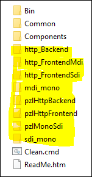
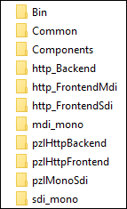
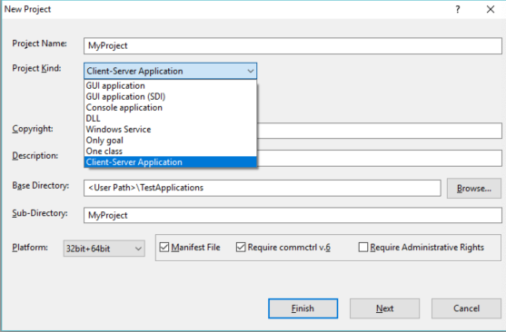
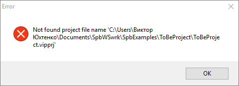

Copyright
(c) Prolog Development Center SPb
AppFrame CookBook
AppFrame. Набор
шаблонов.
Список
проектов, которые можно построить с помощью набора
шаблонов AppFrame представлен во введении.
Полный набор
демонстрационных проектов, построенных с помощью шаблонов, приведен в
директории SpbExamples\Febe.
Шаблоны для
построения проекта на основе соглашений AppFrame расположены в
директории SpbVipTools\AppData\febe.
Состав директорий шаблона проектов представлен ниже

Отмеченные директории содержат собственно проекты, которые опираются на
пакеты, расположенные в директории Common.
Начало практического использования набора шабонов возможно двумя
способами:
-
Ручная подготовка
-
Использование программных средств
Ручная
подготовка
При ручной подготовки
следует весь
приведенный набор директорий и поддиректорий SpbVipTools\AppData\febe скопировать в директорию
appData\ProjectTemplates\febe
системы программирования Visual Prolog.

Далее:
в файл appData\ProjectTemplates\_order
добавить строку
pattern("Client-Server
Application","febe","Client-Server application =MDI and SDI=").
Программная подготовка
Программная
подготовка предпочтительна, поскольку она делает все необходимое.
Для этого следует выполнить программу SpbVipTools\Bin\SetSpbToolsToVip.exe.
Создание набора проектов
После
подготовки можно создавать свои проекты.
Так, вызывая в системе Visual Prolog создание нового проекта следует
выбрать из предлагаемого списка шаблон "Client-Server application".

После нажания на кнопку Finish после
продолжительного времени появится сообщение об ошибке

По
сути это сообщение говорит о завершении создания набора
проектов,
а ошибка вызвана тем, что IDE предсматривает создание и
открытие одного проекта, проектный файл которого xxx.vipprj
должен
появиться на один уровень ниже директории проекта. Созданная же
директория содержит несколько проектов на глубине в два уровня
и
какой из них открывать после создания - неизвестно.
Поэтому проекты следует теперь отдельно открывать в тех директориях:,
где они расположились.
Сгенерированные
проекты удобно открывать и строить с использоанием приложения
SpbVipTools\Bin\WorkSpaceManager.exe,
воспользовавшись операцией
группового добавления проектов в дерево рабочего пространства по
примеру набора для набора демонстрационных проектов FEBE.